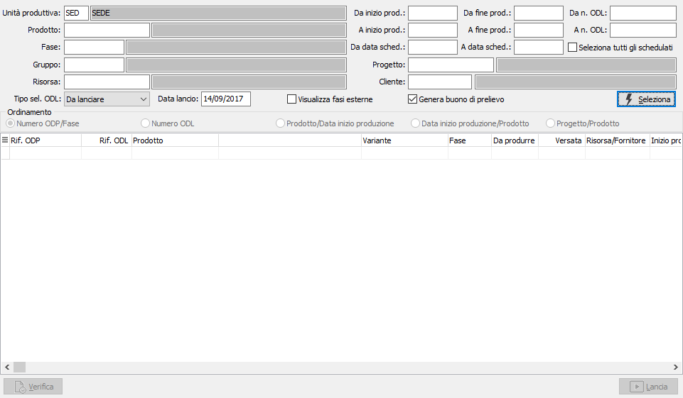
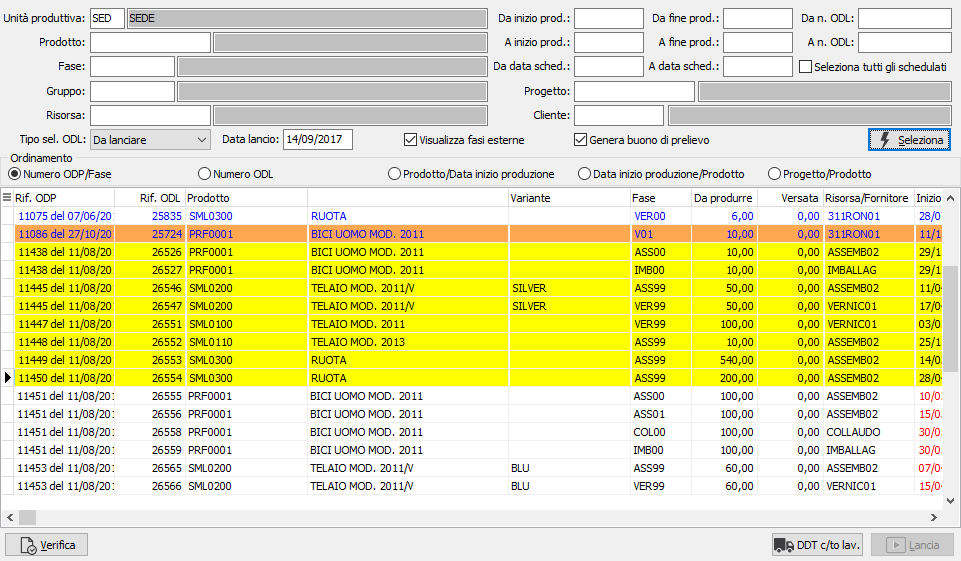
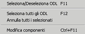
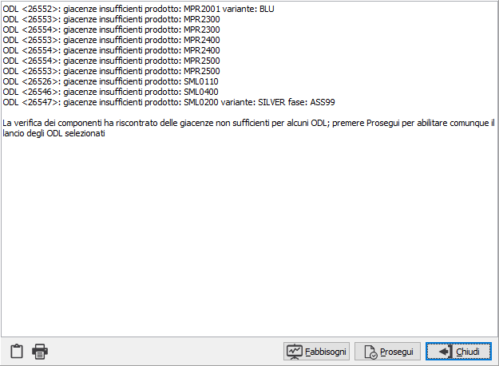

Elaborazione lancio
La funzione di lancio in produzione determina l’effettivo avvio di un ODL (singola fase di produzione). In questa fase è possibile:
Modificare i componenti da utilizzare
Verificare la disponibilità dei materiali
Gestire i buoni di prelievo
E’ possibile vincolare o meno il lancio di un singolo ODL (di una fase successiva alla prima) al completamento della fase precedente ed è possibile vincolare il lancio di una fase alla disponibilità dei materiali necessari per la fase stessa agendo sugli appositi parametri di configurazione.
Nei parametri oltre i normali limiti di selezione quali numero ODL, date di inizio, fine produzione, cliente, prodotto ecc. viene richiesta l'unità produttiva con proposta l'unità produttiva di default valida per l'utente connesso ad OS1; è possibile solo scegliere l'unità produttiva, se gestite in configurazione le unità produttive multiple. Se presente il modulo MRP II saranno richieste anche le date di schedulazione come filtro aggiuntivo alla selezione degli ODL oppure in alternativa è possibile spuntare la casella "Seleziona tutti gli schedulati" che includerà tutti gli ODL schedulati senza controllare nessuna data.
La funzione di lancio consente anche di annullare una operazione di lancio erroneamente eseguita (a condizione che per l’ODL non siano stati effettuati versamenti) o che non sia stato generato il buono di prelievo; tramite la casella "Tipo selezione ODL" è possibile indicare:
Da lanciare: seleziona gli ODL da lanciare, in questo caso la data di lancio è obbligatoria e sarà memorizzata sugli ODL lanciati.
Lanciati: seleziona gli ODL già lanciati, in questo caso la data di lancio viene utilizzata come ulteriore filtro di selezione e può essere lasciata vuota.
è possibile agire opzionalmente anche sulle fasi esterne, spuntando la casella "Visualizza fasi esterne" consentendo successivamente alla selezione di:
Controllare la disponibilità dei materiale necessari per la fase.
Eseguire la generazione dei DDT di trasferimento materiali per le fasi esterne selezionate.
Se prevista in configurazione la gestione dei buoni di prelievo sarà presente la casella di spunta relativa alla generazione automatica che , se spuntata, comporterà dopo una richiesta di conferma la generazione dei buoni di prelievo in automatico.

La pressione del pulsante Seleziona effettua l'elaborazione e mostra nella griglia le informazioni relative agli ODL selezionati in base ai parametri inseriti; le fasi esterne se richieste in visualizzazione vengono mostrate in blu, la colonna Inizio produzione se rossa indica che la data presente è antecedente alla data corrente; è possibile modificare l'ordinamento dei dati visualizzati cliccando sui cerchietti presenti nel box Ordinamento.


Nella griglia è possibile selezionare o deselezionare i singoli ODL con il doppio clic del mouse o tramite il menù contestuale accessibile tramite il tasto destro del mouse; da questo menù è possibile anche selezionare o deselezionare tutti gli ODL ed accedere alla modifica dei componenti di un singolo ODL.La modifica dei componenti dell'ODL si effettua tramite la finestra mostrata sotto; vengono elencati tutti i componenti dell'ODL con le relative giacenze; la modifica riguarda tutti i componenti materia prima, non i semilavorati o il semilavorato alla fase; è possibile comunque inserire nuovi componenti anche di tipo semilavorato; è possibile modificare il dettaglio lotti/ubicazioni, non del componente alla fase, anche modificando le quantità originali, al salvataggio finale viene fatto un controllo di coerenza tra quantità del componente e quantità del dettaglio, se nel dettaglio si inseriscono quantità che differiscono dal componente è possibile aggiornare quest'ultimo con un bottone che è stato aggiunto al navigatore dei dettagli.
 Se attiva la
gestione matricole sarà possibile, tramite il pulsante Matricole, accedere
alla finestra di gestione
massiva.
Se attiva la
gestione matricole sarà possibile, tramite il pulsante Matricole, accedere
alla finestra di gestione
massiva.
Una volta selezionati gli ODL è possibile effettuare il lancio premendo il pulsante Lancia che sarà acceso; se attivo in configurazione il controllo giacenza in fase di lancio non sarà possibile effettuare il lancio prima di aver premuto il pulsante Verifica; se non ci sono problemi di giacenze il pulsante Lancia si accenderà altrimenti sarà visualizzata la finestra sottostante. In questa finestra saranno visualizzati i problemi inerenti le giacenze, premendo Chiudi non sarà possibile effettuare il lancio e gli eventuali ODL selezionati che hanno causato gli errori saranno deselezionati in automatico; premendo Prosegui sarà comunque possibile procedere con il lancio ed il pulsante Lancia si accenderà.

Il pulsante Lancia/Annulla effettua l'effettiva registrazione delle operazioni di lancio o di annullamento del lancio relativamente agli ODL selezionati; se non c'è nessun ODL selezionato il pulsante risulta spento, altrimenti sarà acceso fatto salvo quanto specificato sopra in relazione al controllo giacenze. Al momento della registrazione effettiva del lancio vengono eseguite le seguenti operazioni:
Aggiornamento dell’ODL con le modifiche manualmente apportate.
Aggiornamento dei componenti dell’ODL eventualmente modificati.
Aggiornamento dello stato dell’ODL (che diventa "Lanciato"); sull’ODL viene riportata la data del lancio.
Aggiornamento dell’ordinato a produzione del composto e dell’impegnato da produzione dei componenti che viene spostato dai magazzini associati all’unità produttiva al magazzino WIP associato alla risorsa/reparto; se non è presente un magazzino WIP a nessun livello (Risorsa/Reparto) l’ordinato a produzione del composto e l’impegnato da produzione dei componenti rimangono sui magazzini dell'unità produttiva.
Stampa (su richiesta) dell’elenco dei componenti da trasferire sui magazzini WIP degli ODL lanciati. Questa funzione è attiva solo se l’opzione “Gestione buoni di prelievo” nella configurazione “Piano di produzione” non è attiva e serve a dare un ausilio all’addetto di magazzino per la successiva compilazione manuale del buono di prelievo. La stampa può essere eseguita anche successivamente al salvataggio per gli ODL lanciati (tramite il bottone “Fabbisogni”).
Se visualizzate e selezionate delle fasi esterne sarà attivo anche il pulsante DDT c/to lavoro; premendo questo pulsante saranno elaborati gli ODL relativi a fasi esterne selezionati e si accederà in automatico alla procedura di Generazione DDT terzisti direttamente nella pagina relativa alle giacenze con i componenti già selezionati per l'invio in relazione alla loro giacenza.
Se non sono gestiti i buoni di prelievo sarà presente il pulsante Fabbisogni attivo se si selezionano ODL già lanciati, consente di stampare l'elenco dei fabbisogni relativi agli ODL selezionati allo scopo di compilare manualmente o controllare il buono di prelievo.